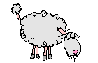

12/03/2014
Experience : "Si tu ne peux pas tout ce que tu veux, sache vouloir ce que tu peux"
Et j'ai plusieurs expériences: Celle du professionnel :  Eleveur-sélectionneur et président d'organismes. Celle du bénévole au service de son prochain : Vice-Président national ou secrétaire général de l’ADUA, Association des Usagers de l'Administration dont le siège social est à Paris,pendant dix ans. Militant de l'Association Française de Développement International : AFDI = "Paysans sans Frontière". Celle de la société contemporaine : Essayiste économique et social. 'Faisons l'économie du Chômage' 1993 Témoignage sur l'Histoire de Echillais et Soubise de 1900 à 2012.
Après mon service militaire à Madagascar et en Algérie, je fus agriculteur-éleveur, engagé dans la sélection et les organisations professionnelles agricoles. Fondateur, avec quelques passionnés, de la race Mouton-Vendéen , j'en ai assuré la présidence pendant trente ans, jusqu'en 1996. Je fus aussi président, de 1981 à 1984, de la Fédération Nationale Ovine et de l'ITOVIC -Institut Technique Ovin et Caprin-, puis de 1986 à 1997, de l’ALGO, -Association Nationale des Livres Généalogiques Ovins-, à Paris. Depuis ma retraite, mon troupeau sélectionné a été repris par la SCEA du Griffet et je milite pour le développement agricole de Madagascar dans le cadre de "Paysans sans Frontière", à l’ADUA et à l'UNRPA dont j'ai assuré la présidence des 480 adhérents de la section de St-Agnant de 2007 à 2013. Je milite actuellement au sein du bureau de l' ARUCHR: Association Représentant les Usagers du Centre Hospitalier de Rochefort, pour faciliter les relations entre les usagers et l'hôpital et encourager la prévention des maladies nosocomiales. et@aol.com |